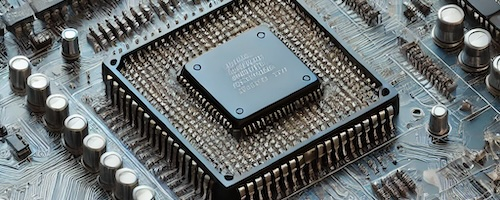

Sustainability Through the Ages
Explore Intel's journey through time, discovering how innovation, sustainability, and responsible manufacturing have helped shape a better future for technology and our planet.
Explore Intel's journey through time, discovering how innovation, sustainability, and responsible manufacturing have helped shape a better future for technology and our planet.

Robert Noyce and Gordon Moore rename the newly formed company NM Electronics to Intel Corporation, laying the foundation for decades of technological innovation.

Intel debuts the 4004, the world's first commercial microprocessor, igniting the microprocessor revolution and propelling the future of computing devices.

Launch of the 8086 processor, establishing the x86 architecture that drives countless PCs and servers in the modern era.

Intel introduces the 386 processor with 32-bit architecture, ushering in a new era of performance and multitasking for personal computers.
This year marks Intel's highest annual greenhouse gas emissions. Intel responded by investing heavily in renewable energy and sustainable manufacturing.
Intel launches its RISE strategy and ambitious 2030 sustainability goals focused on climate, water conservation, and waste reduction.
Intel announces its commitment to achieve net-zero greenhouse gas emissions across global operations by 2040.
Intel reaches 99% renewable electricity usage worldwide, helping dramatically reduce carbon emissions and environmental impact.
Intel hosts its first Sustainability Summit, bringing together industry leaders to advance sustainable semiconductor manufacturing.
⬅ Scroll horizontally to explore Intel's sustainability journey ➡